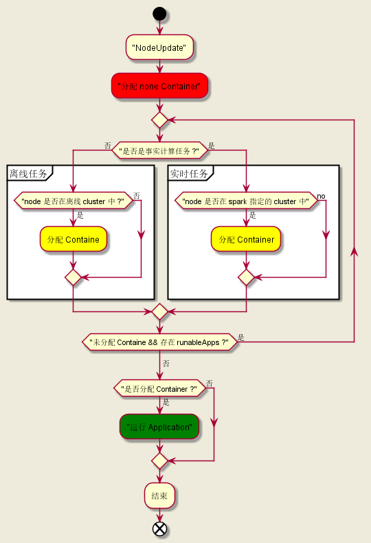

Table of Contents
Contributing
1 Yarn WorkFlow

2 Modification
2.1 AddApplication (对应上图中的步骤 3、4)
2.1.1 reject the steaming application without tags
modified code
//************DDW modification(DDW 改动代码)**************// if(queue.getQueueName().startsWith("root.stream_")){ Set<String> tags = rmApp.getApplicationTags(); if(CollectionUtils.isEmpty(tags)){//保证实时任务传递了参数 spark.yarn.tags String msg = "[DDW] The streaming task require the 'spark.yarn.tags' when submitting to queue: "+queue.getQueueName(); LOG.info(msg); rmContext.getDispatcher().getEventHandler() .handle(new RMAppRejectedEvent(applicationId, msg)); return; }else { for(String tag:tags){ if(StringUtils.isEmpty(tag)){//保证参数 spark.yarn.tags 中的每个值都存在 String msg = "[DDW] The 'spark.yarn.tags' have an empty tag when submitting to queue: "+queue.getQueueName(); LOG.info(msg); rmContext.getDispatcher().getEventHandler() .handle(new RMAppRejectedEvent(applicationId, msg)); return; } if(!tag.startsWith("signature#")){//保证指定运行任务的主机都是在集群中 boolean isInNodes=false; for(NodeId nodeId:nodes.keySet()){ if(nodeId.getHost().equals(tag)){ isInNodes=true; break; } } if(!isInNodes) { String msg = "[DDW] The 'spark.yarn.tags' have a host that is not in real-time cluster when submitting to queue: " + queue.getQueueName(); LOG.info(msg); rmContext.getDispatcher().getEventHandler() .handle(new RMAppRejectedEvent(applicationId, msg)); return; } } } } } //************DDW modification(DDW 改动代码)**************//
2.2 AssignedContainer (对应上图中的步骤 4、8)
2.2.1 insulting the streaming task and mapreduce task
- workflow

- modified code
//************DDW modification(DDW 改动代码)**************// Map<String, Set<String>> groupMap = scheduler.getAllocationConfiguration().getGroupMap(); for (FSAppAttempt sched : runnableApps) { if (sched.getQueueName().startsWith("root.stream_")) {//实时任务只能在任务指定的 node 上运行 RMApp rmApp = sched.getRMApp(); Set<String> tags = rmApp.getApplicationTags(); if (CollectionUtils.isEmpty(tags) || !tags.contains(node.getNodeName())) { continue; } } else {//非实时任务确保在离线集群运行 if (!groupMap.get("MAPREDUCE").contains(node.getNodeName())) { continue; } } } //************DDW modification(DDW 改动代码)**************//
2.3 ReloadAllocationConfiguration
2.3.1 a thread reload the allocation periodically
- modified code
reloadThread = new Thread() { @Override public void run() { while (running) { //************DDW modification(DDW 改动代码)**************// try { reloadAllocations(); } catch (Exception ex) { if (!lastReloadAttemptFailed) { LOG.error("Failed to reload fair scheduler config file - " + "will use existing allocations.", ex); } lastReloadAttemptFailed = true; } //************DDW modification(DDW 改动代码)**************// try { Thread.sleep(reloadIntervalMs); } catch (InterruptedException ex) { LOG.info( "Interrupted while waiting to reload alloc configuration"); } } } }; reloadThread.setName("AllocationFileReloader"); reloadThread.setDaemon(true);
2.3.2 get configuration form ddw-api
- modified code
//************DDW modification(DDW 改动代码)**************// Map<String, Set<String>> groupMap = getGroupMapFromHttp(); if(MapUtils.isEmpty(groupMap)|| CollectionUtils.isEmpty(groupMap.get("MAPREDUCE")) { throw new ParserConfigurationException("[DDW] can not get the group configuration from http!!!"); //1.ResourceManager 启动时产生异常，直接反应为启动失败 //2.ResourceManager 进行 reload 时产生的异常，不会影响原本的配置信息，只会在日志中输出错误 } AllocationConfiguration info = new AllocationConfiguration(minQueueResources, maxQueueResources, queueMaxApps, userMaxApps, queueWeights, queueMaxAMShares, userMaxAppsDefault, queueMaxAppsDefault, queueMaxResourcesDefault, queueMaxAMShareDefault, queuePolicies, defaultSchedPolicy, minSharePreemptionTimeouts, fairSharePreemptionTimeouts, fairSharePreemptionThresholds, queueAcls, newPlacementPolicy, configuredQueues, nonPreemptableQueues, groupMap); //************DDW modification(DDW 改动代码)**************//